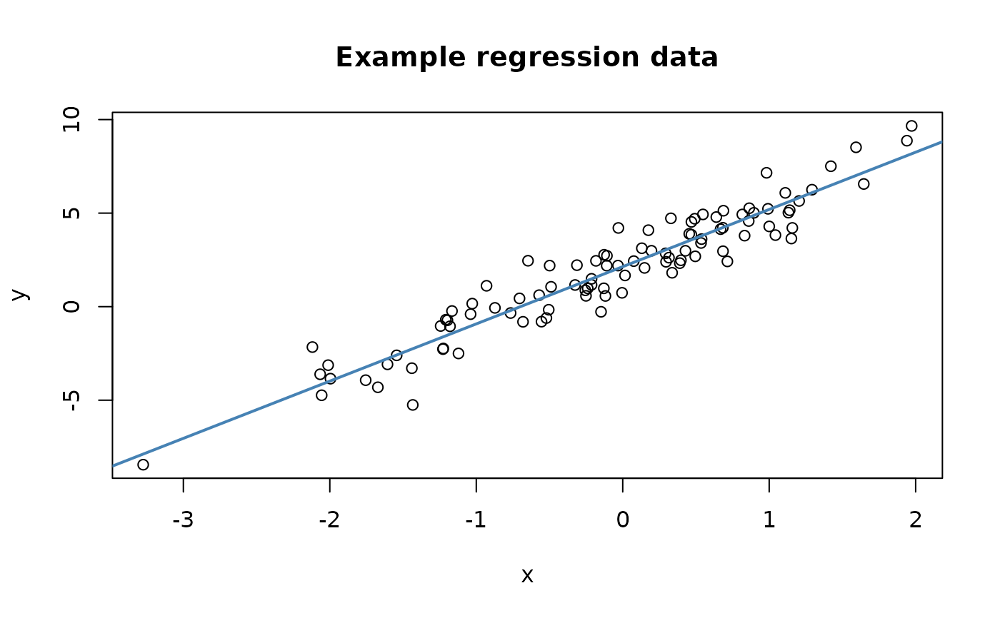

A small simulated dataset suitable for demonstrating the predictCheckR workflow. Data were generated from a simple univariate linear regression model:
$$x_i \sim \mathcal{N}(0, 1)$$ $$y_i = 2 + 3 x_i + \varepsilon_i, \quad \varepsilon_i \sim \mathcal{N}(0, 1)$$
The true parameter values are therefore intercept = 2 and slope = 3.
Format
A data frame with 100 rows and 2 variables:
xNumeric predictor drawn from \(\mathcal{N}(0, 1)\).
yNumeric response: \(y = 2 + 3x + \varepsilon\), where \(\varepsilon \sim \mathcal{N}(0, 1)\).
Source
Simulated internally with set.seed(2024).
See data-raw/create_example_data.R for the generation script.
Examples
data(example_data)
head(example_data)
#> x y
#> 1 0.9819694 7.154570
#> 2 0.4687150 3.846278
#> 3 -0.1079713 2.719252
#> 4 -0.2128782 1.487042
#> 5 1.1580985 4.209046
#> 6 1.2923548 6.251425
cor(example_data$x, example_data$y)
#> [1] 0.9507625
plot(example_data$x, example_data$y,
xlab = "x", ylab = "y",
main = "Example regression data")
abline(lm(y ~ x, data = example_data), col = "steelblue", lwd = 2)
